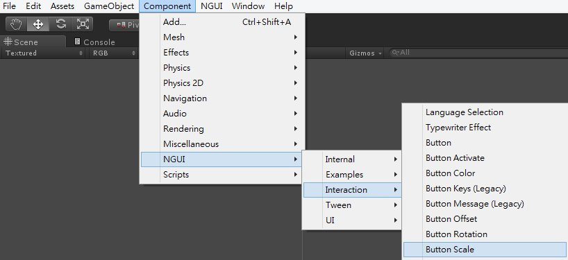
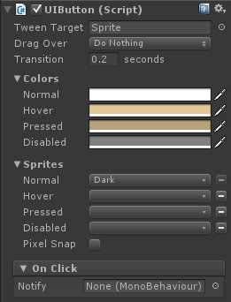
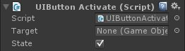
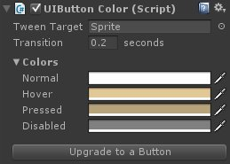
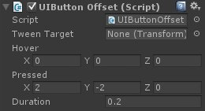
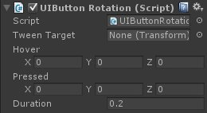
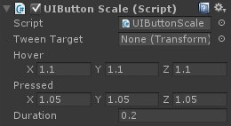

這篇要來介紹一下 NGUI 中的 Button 系列腳本
點選 Component → NGUI → Interaction
可以看到有一長串的 NGUI 腳本

在使用 Button 腳本前，須先加入 Collider 至物件上，才可以使用
Button：基本按鈕動作

Button Activate：物件開關

Button Color：功能同 Button ，但只有切換按鈕顏色功能

Button Keys (Legacy)：舊版 NGUI 功能，不建議使用
Button Message (Legacy)：舊版 NGUI 功能，不建議使用
Button Offset：按鈕偏移

Button Rotation：按鈕旋轉，同 Button Offset，座標影響變為 Rotation

Button Scale：按鈕縮放，同 Button Offset，座標影響變為 Scale
